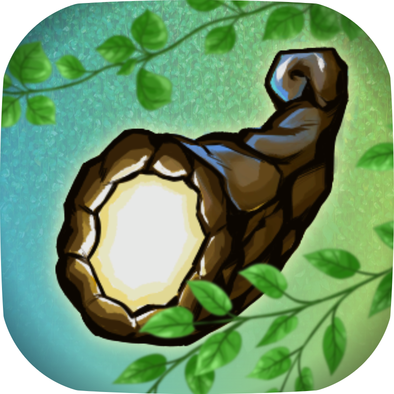
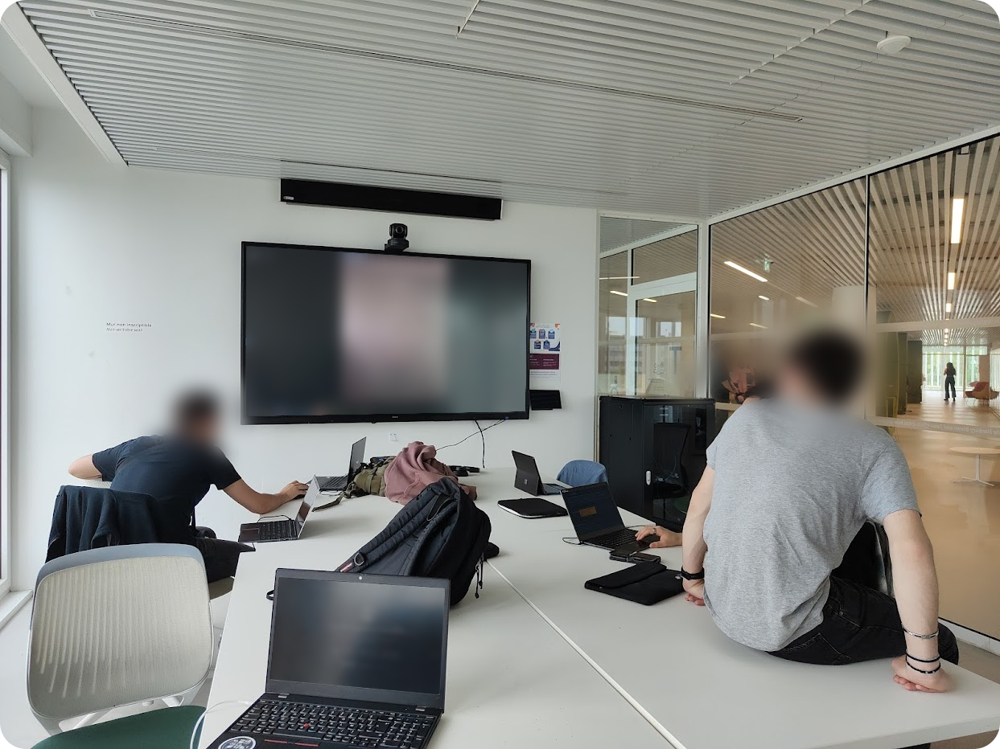
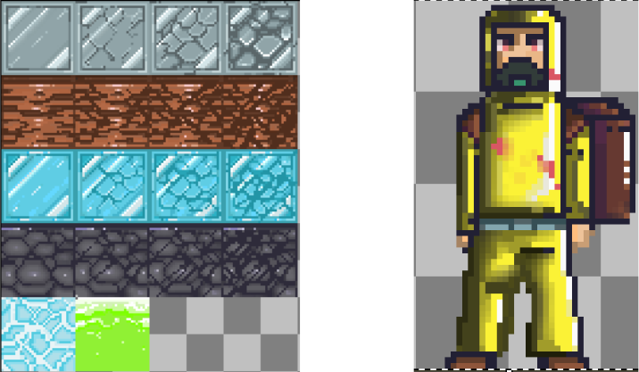
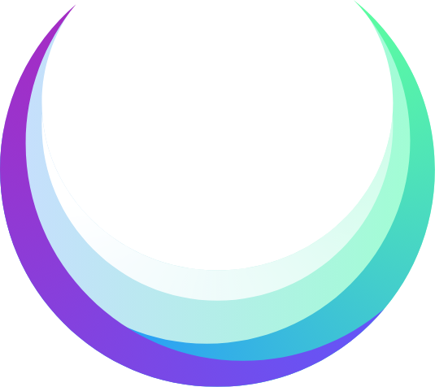

×
FrostHorn
Le projet de jeu vidéo (et au sens large informatique) le plus ambitieux que je réalise.

En cours !
Jeu
Projet personnel
Godot
GDScript
C++
Node JS
• FrostHorn est sans nul doute le projet informatique le plus important que je développe actuellement. Ce projet, conçu au sein d'une équipe de neuf personnes, a pour but de concevoir un jeu vidéo d'aventure, de construction et de gestion, en deux dimensions, dans un univers anéanti par une guerre sans précédent.
• Ce jeu mêle l'aspect créatif, le goût du développement et la coordination en équipe. Nous utilisons GitHub pour faire évoluer le jeu, avons un serveur Discord dans lequel chacun contribue à l'apport d'idées. Organiser le travail d'équipe ? C'est possible grâce aux outils de Notion. Enfin, nous organisons mensuellement des réunions physiques dans notre bibliothèque universitaire pour marquer l'avancement du projet et plancher sur les prochaines tâches !
• Le projet étant relativement récent, nous n'avons pas encore de prototype complet de jeu, mais nous préparons le terrain. Le jeu utilisera le moteur de jeu Godot.
• Nous prévoyons également très rapidement d'ajouter une documentation à notre jeu en déployant un site statique. Pour ce faire, nous utilisons l'outil Docusaurus, ainsi que le langage Node.Js. Le lien GitHub vous est fourni en bas de cette page !




Liens annexes
GitHub du projet
GitHub de la documentation